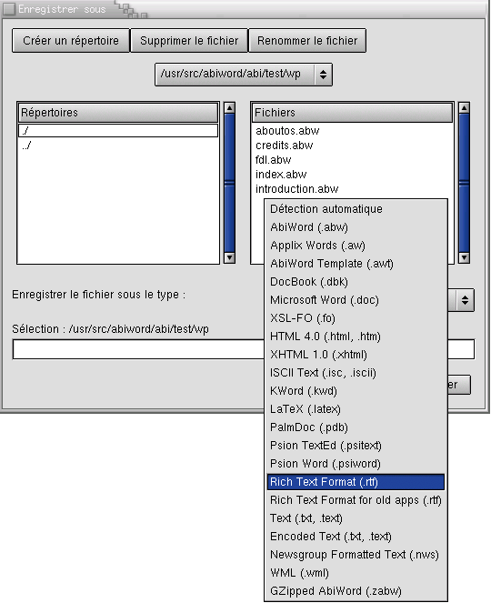

Comment échanger des fichiers avec Microsoft Word ?
Il est presque inévitable qu'à un certain moment, vous aurez le besoin d'expédier un document que vous avez créé avec AbiWord à une personne utilisant Microsoft Word ou ouvrir un document créé avec Microsoft Word avec AbiWord. Heureusement, il est facile de réaliser ces transferts.
Visualiser un document AbiWord avec Microsoft Word
Jusqu'à ce que Microsoft annonce le support des fichiers d'AbiWord, les documents créés avec AbiWord nécessiteront d'être exportés dans un format que Word peut lire. L'enregistrement au format Rich Text Format permet de réaliser facilement cette exportation.

Le format Rich Text est couramment utilisé par les produits Microsoft Office et ils n'auront aucune difficulté à importer les documents enregistrés ainsi.
Visualiser les documents Word avec AbiWord
AbiWord peut ouvrir certains documents créés au format Microsoft. Ouvrez le document en utilisant Fichier > Ouvrir. Après l'ouverture du document, il peut subsister des différences entre la présentation du document faite par AbiWord comparée à celle de Microsoft Word. En plus, AbiWord ne peut pas encore ouvrir tous les formats employés par Microsoft Word.
Si vous rencontrez des problèmes, demandez à l'utilisateur de Word d'enregistrer le document au format Rich Text Format (.rtf). Toutes les versions de Microsoft Word peuvent le faire et AbiWord peut ouvrir les fichiers RTF de manière fiable.